Las marcas que se recuerdan no gritan. Susurran.
Creative Whisper Productions es una productora audiovisual en Quito. Filmamos el viaje de tus clientes —desde que te descubren hasta que te recomiendan— con lenguaje de cine y formatos listos para redes.
Formatos que ya estamos filmando.
Piezas verticales de nuestro último reel: eventos, ficción, sesiones de audio, testimonios y entrevistas. Todo filmado y editado por el mismo equipo.

Cobertura de evento
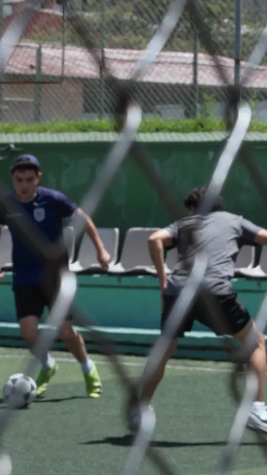
Cápsula de ficción
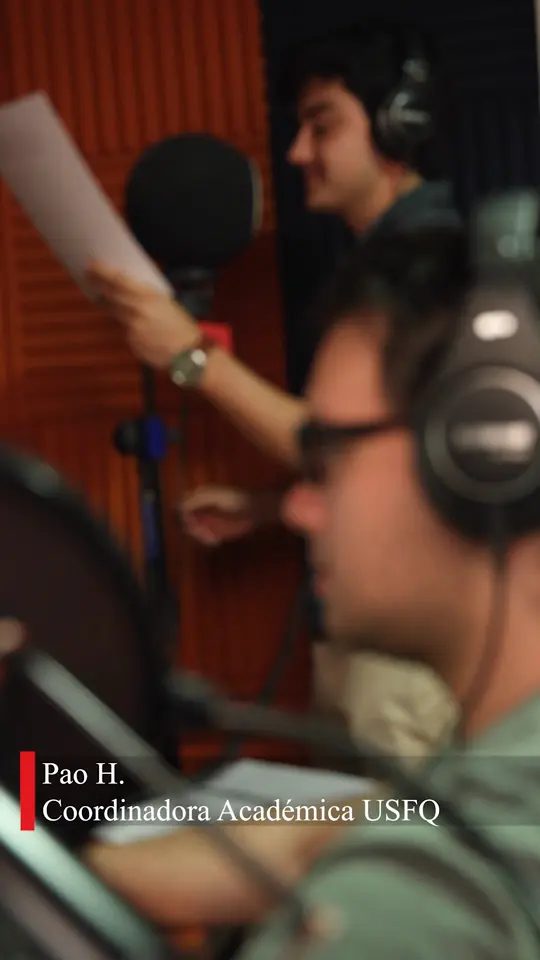
Doblaje y ADR
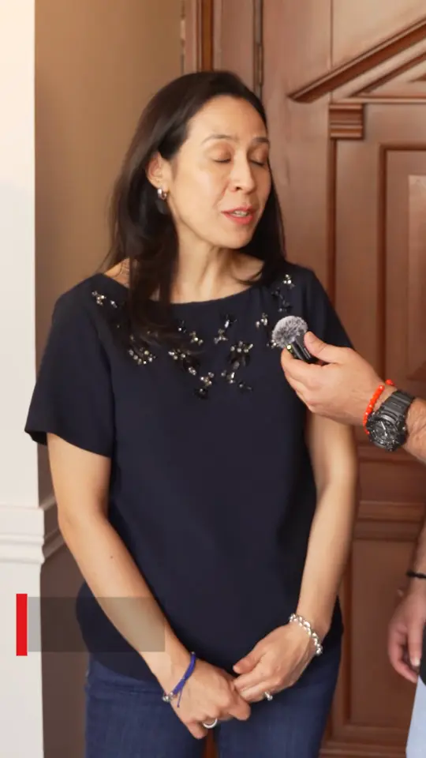
Testimonios
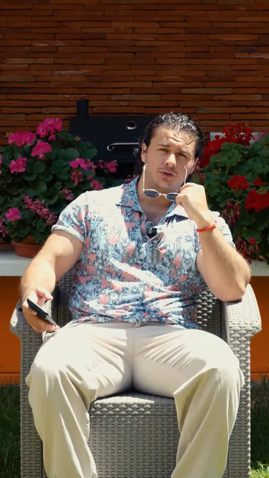
Entrevista de marca
No hacemos videos para llenar un feed. Diseñamos el momento exacto en que alguien decide *confiar* en tu marca, y lo contamos con la *paciencia* del cine.
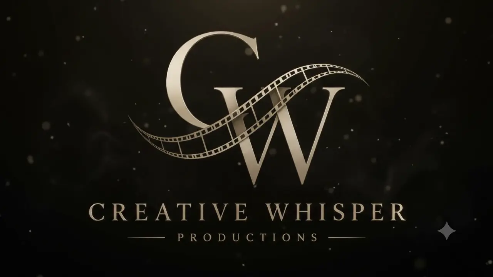
El viaje de tu cliente, cuadro por cuadro.
Cada etapa necesita un video distinto. Antes de grabar definimos en qué momento está tu cliente y qué tiene que sentir para dar el siguiente paso.
-
 01Descubrimiento
01DescubrimientoTe ven por primera vez
Reels y piezas cortas que detienen el scroll y dejan una imagen en la cabeza.
9:16 · Reels · TikTok · Anuncios -
 02Consideración
02ConsideraciónQuieren conocerte
Video de marca y detrás de cámaras: quién eres, cómo trabajas y por qué importa.
16:9 · 4:5 · Video de marca -
 03Decisión
03DecisiónNecesitan una razón
Testimonios y casos reales que resuelven la última duda antes de comprar.
9:16 · 16:9 · Testimonios -
 04Recomendación
04RecomendaciónTe recomiendan
Eventos y comunidad convertidos en historias que tus clientes quieren compartir.
Aftermovie · Cobertura · Foto
Del guion a la última toma.
Encontramos la historia, la filmamos, la editamos y medimos cómo funciona. Un solo equipo responsable de que tu marca se sienta igual en cada formato.
Ver todos los servicios →- Estrategia
-
Storytelling y guion
Encontramos la historia antes de encender la cámara: el mensaje, la estructura y el guion de cada pieza.
Concepto
Guion
-
Análisis de datos
Medimos cómo rinde cada video en cada etapa del viaje del cliente y usamos esos datos para decidir qué filmar después.
Métricas
Reportes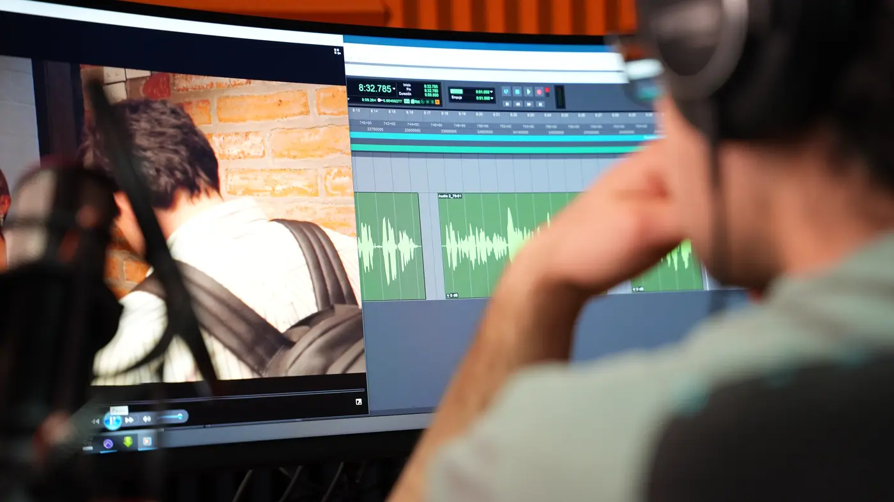
- Producción
-
Video de marca
La pieza central de tu comunicación: quién eres, contado con lenguaje de cine y tomas aéreas cuando la historia lo pide.
16:9 · 4K
Dron
-
Contenido vertical
Reels y TikToks pensados para retener, filmados con la misma calidad que un spot.
9:16
4:5
-
Testimonios y casos
Tus clientes hablando por ti, con luz, sonido y edición cuidados.
Entrevista
Lower thirds -
Cortometrajes y branded content
Historias largas para instituciones y marcas que quieren emocionar, no solo informar.
Guion
Dirección
Montaje
-
Cobertura de eventos
El ambiente, la gente y los momentos que después se vuelven contenido para todo el año.
Aftermovie
Foto - Talento y voz
-
Actores y creadores de contenido
Actores y creadores que le ponen cara y voz a tu marca, elegidos según tu público y el tono de la pieza.
Casting
UGC
-
Doblaje, locución y ADR
Voces limpias y sincronizadas, grabadas en estudio de locución para ficción, spots y cápsulas.
Voz
Mezcla

Un día dragón
Un cortometraje para el Colegio de Administración y Economía de la USFQ, escrito para la Generación Z y contado con humor: un protagonista, una vida planificada en una hoja de cálculo y un campus entero como escenario.
- Duración
- 15–20min
- Locaciones
- 13
- Días de rodaje
- 4
- Público
- Gen Z
Donde pasa lo que no se ve.
Guiones marcados a lápiz, tomas repetidas hasta que la voz calza y horas de sala de edición. El detalle es el trabajo.


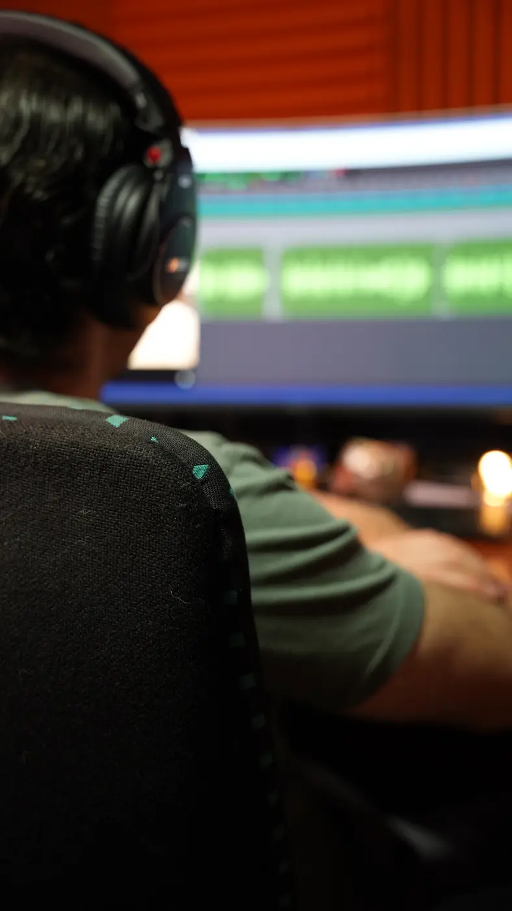
Herramientas de cine, a escala de marca.
Cámara de la línea Cinema, audio inalámbrico, estabilizador, dron y un estudio propio para voz y postproducción. Todo lo que ves en pantalla sale de aquí.

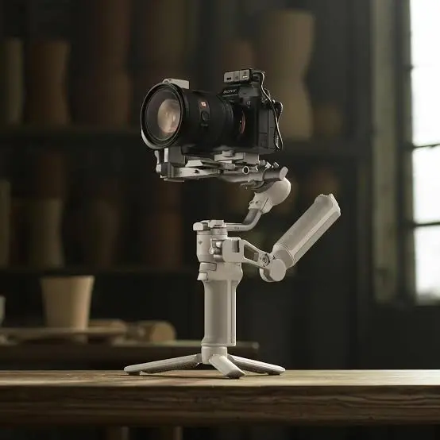
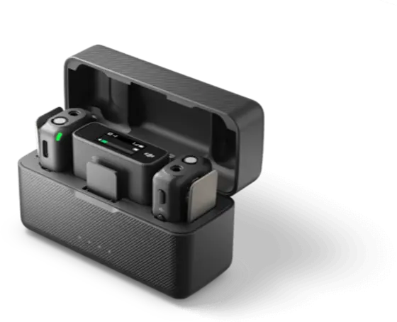
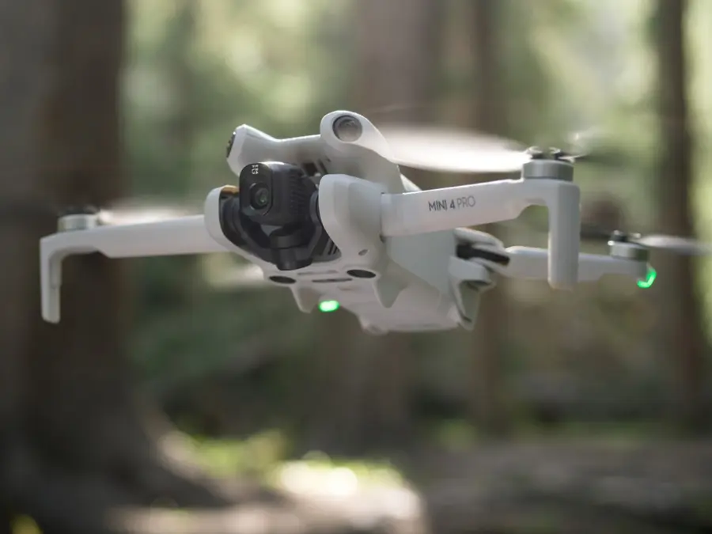
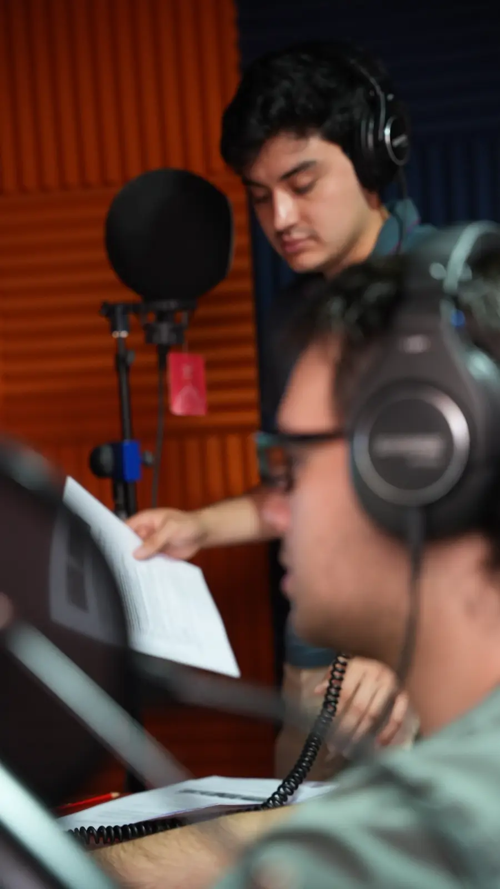
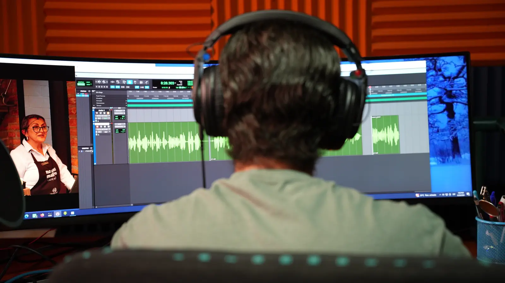
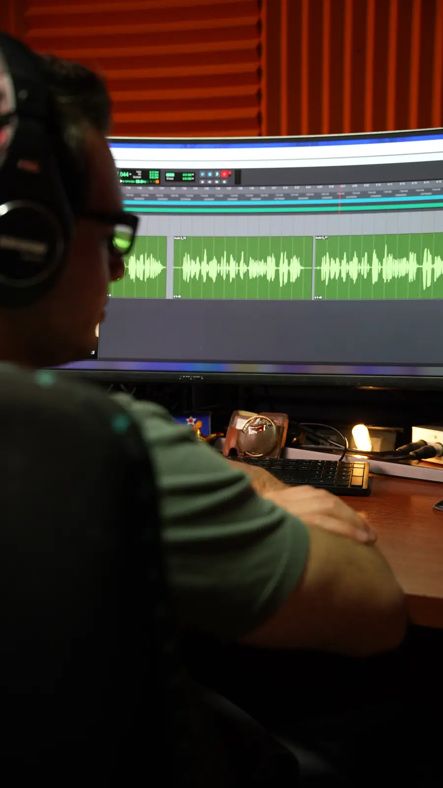
Antes de grabar.
¿Con qué tipo de marcas trabajan?
Con marcas, emprendimientos e instituciones que quieren contar mejor su historia y ya sienten que un video “bonito” no basta: necesitan que ese video mueva a su cliente a la siguiente etapa.
¿Solo filman o también ayudan con la idea?
Empezamos por la idea. Definimos la etapa del viaje del cliente, el mensaje y el formato; escribimos el guion, filmamos, editamos y después medimos cómo funcionó cada pieza.
¿Puedo sacar contenido para redes del mismo rodaje?
Sí. Planificamos cada rodaje para entregar versiones en 16:9 para web y YouTube, y en 9:16 y 4:5 para Reels, TikTok y anuncios.
¿Consiguen actores o creadores de contenido?
Sí. Proponemos actores, locutores y creadores de contenido según el público de tu marca y el tono de la pieza, y los dirigimos en el rodaje.
¿Cómo empezamos?
Escríbenos con lo que tienes en mente. Agendamos una reunión corta para entender tu marca y te enviamos una propuesta con alcance y cronograma.
Cuéntanos qué quiere decir tu marca. Nosotros hacemos que se escuche.
Escríbenos por WhatsApp o Instagram. Agendamos una reunión y te ayudamos a encontrar el video que tu cliente necesita ver ahora.